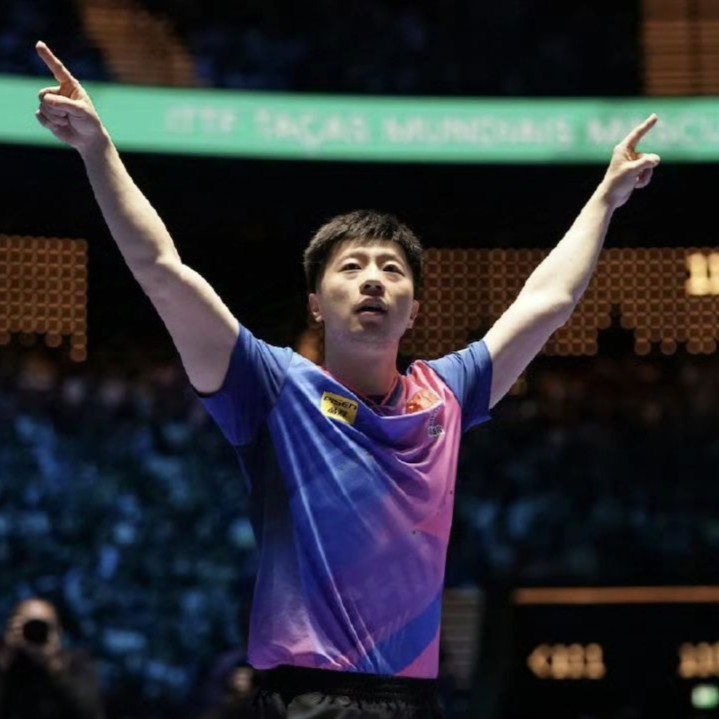

马龙简介

姓名：马龙
性别：男
职业：乒乓球运动员
职务：中国乒乓球队队长
生日：1988年10月20日
籍贯：辽宁省鞍山市
马龙成就
马龙是乒乓球历史上首位完成“超级全满贯”（囊括奥运会、世锦赛、世界杯、亚运会、全运会冠军）的选手，并成为历史上第一位“双圈大满贯”得主。
他曾五次夺得世锦赛单打冠军，为此荣获了象征乒乓球最高荣誉的永久复刻奖杯。
作为中国乒乓球队队长，他不仅在赛场上表现出色，还展现了卓越的领导力和职业精神。
在东京奥运会上，他凭借顽强的意志克服伤病，成为史上首位两夺奥运单打金牌的选手。
2024年世界杯，马龙在决赛中面对强劲对手，展现了逆风翻盘的实力，成功夺得职业生涯第三个世界杯单打冠军。
同年，他担任巴黎奥运会中国代表团的旗手，这份殊荣彰显了他的体育地位和精神影响力。
他在采访中表示：“只要心存热爱，永远都是当打之年。”这句话鼓舞了无数乒乓球爱好者和追梦人。